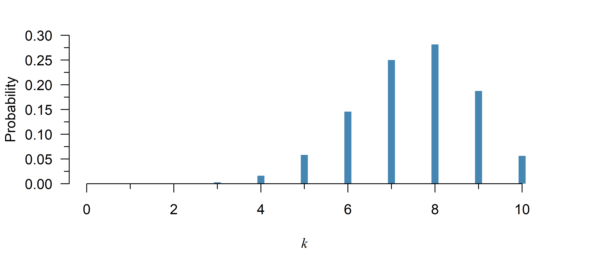
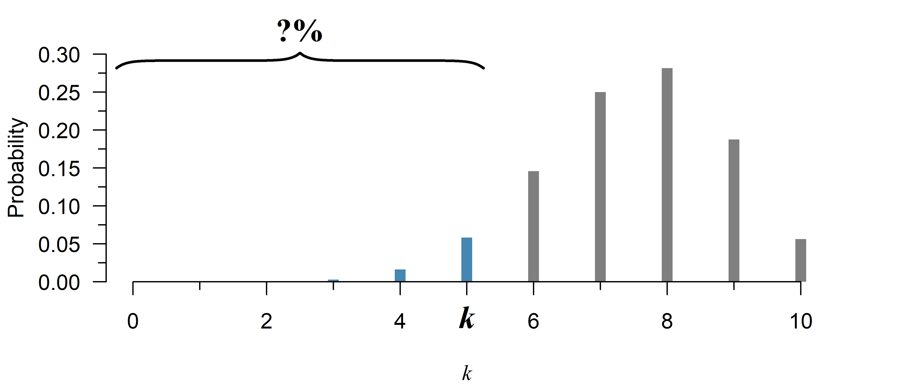
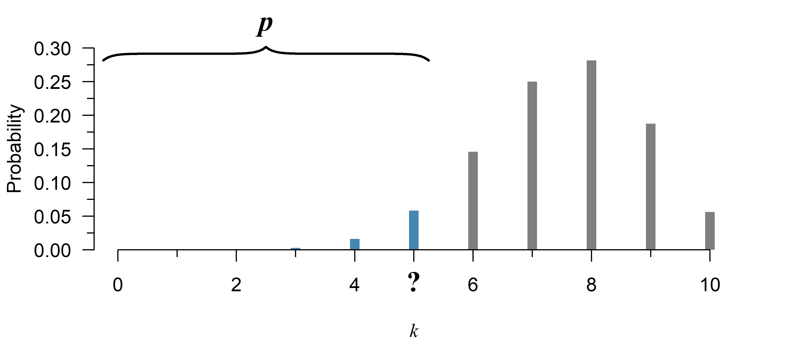
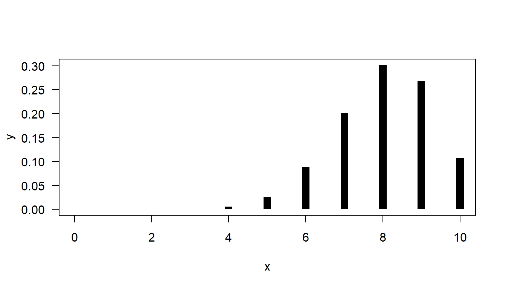
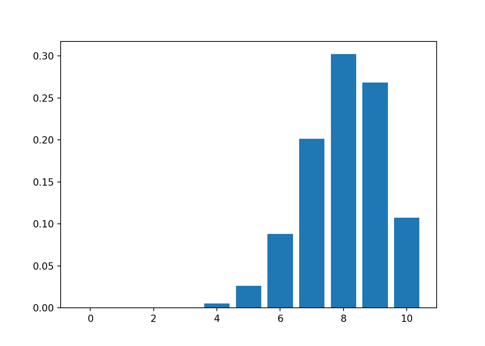
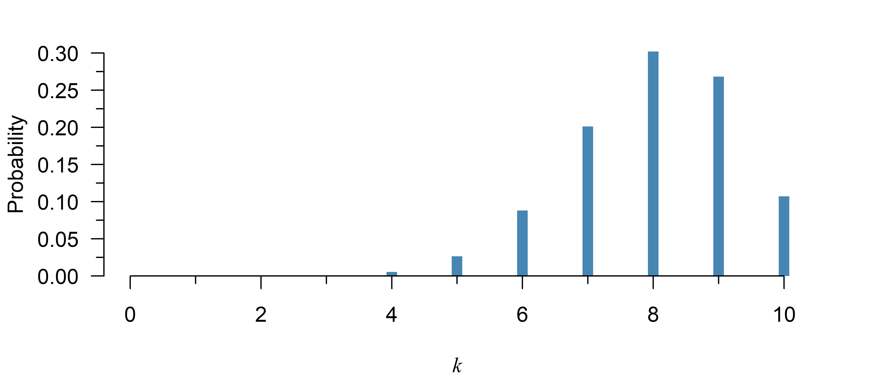
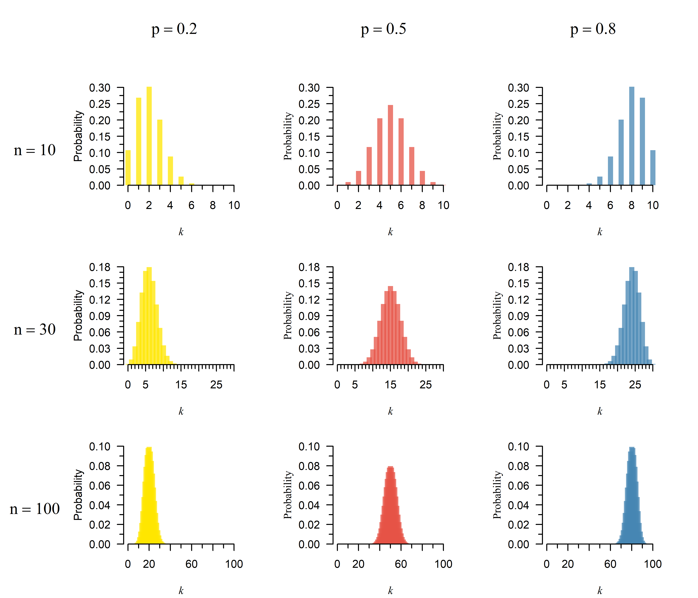
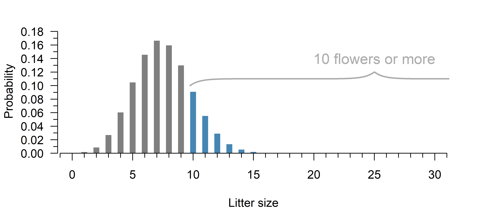

Binomial Distribution
A discrete, probability distribution that can be left or right skewed.
The binomial distribution is used to model ratios, fractions and binary data. If events happen with a fixed probability of success \(p\), then the binomial distribution is not an approximation, but the probability distribution of ratios.
In reality, the probability of success may depend on unknown, unmeasured, or otherwise unaccounted for external factors: If we consider the effect of smoking on the probability of developing lung cancer, then such external factors might include familial history, exposure to other carcinogens, etc. For this reason, analyses based on a binomial distribution should include some assessment of whether the chosen distribution is realistic.
Properties
What is the probability of a given count \(k\)?
Mathematical formula:
\[\begin{align} \tag{1}\label{dpois} \binom{n}{k} p^k (1 - p)^{n - k} \end{align}\]Code:
dbinom(k, n, p)from scipy.stats import binom
binom.pmf(k, n, p)
Symbols
- \(n\): The number of trials
- \(k\): The number of successes
- \(p\): The probability of success
- \(x \choose y\): The binomial coefficient
Explanation
The binomial distribution is a discrete probability distribution. There are only \(n\) possible values for the outcome (\(0, 1, 2, \dots, n\)), but not \(1.5\) or \(2.01\). Hence, you can directly read probabilities off the \(y\)-axis in Figure 1.
The correct term for a probability function of a discrete distribution is a probability mass function, though it is common in literature to see people call both discrete and continuous versions a probability density function.
Note that while it looks like the probability is zero at \(k = 2\) or less in Figure 1, it is never exactly zero within the range of possible values. The probability is just too small to be visible in the figure.
What is the probability up till a given point \(k\)?

Mathematical formula:
\[\begin{align} \tag{2}\label{ppois} \sum_{i = 0}^k \binom{n}{i} p^i (1 - p)^{n - i} \end{align}\]Code:
pbinom(k, n, p)from scipy.stats import binom
binom.cdf(k, n, p)Note: loc refers to the mean, scale to the standard deviation.
Symbols
- \(n\): The number of trials
- \(k\): The number of successes
- \(p\): The probability of success
- \(x \choose y\): The binomial coefficient
- \(\sum\): Summation (compute for \(0, 1, \dots, k\) and add all results)
Explanation
The cumulative distribution function (CDF) is the sum of the probability mass function up till a given point \(k\). It can be used to calculate the probability of the number of successes being no greater than a certain value. To obtain the opposite—the chance of an observation greater than a certain value, simply use \(1\) minus the CDF. Finally, to compute the chance of being within a certain range, you can subtract the CDF of the larger value, from the CDF of the smaller value (see the examples below).
Examples
If you randomly guess multiple choice questions with 4 options on a 10-question exam, the chance of failing (\(\leq 5\) questions right) is:
pbinom(5, 10, 1/4)[1] 0.9802723And the chance of at least 5 right is equal to:
1 - pbinom(4, 10, 1/4)[1] 0.07812691(This works because you start with 1 (100%) exclude all options resulting in less than 5.)
To compute the probability of a certain range, just subtract the smaller value from the greater:
# Probability of 5 to 7 questions right:
pbinom(7, 10, 1/4) - pbinom(4, 10, 1/4)[1] 0.07771111(This works because you start with all possibilities up till 7 and then exclude all options resulting in less than 5.)
The probability of a value of \(k \leq 5\) in Figure 2 is given by:
pbinom(5, 10, 0.75)[1] 0.07812691If you randomly guess multiple choice questions with 4 options on a 10-question exam, the chance of failing (\(\leq 5\) questions right) is:
from scipy.stats import binom
binom.cdf(5, 10, 1/4)0.9802722930908203And the chance of at least 5 right is equal to:
1 - binom.cdf(4, 10, 1/4)0.07812690734863281(This works because you start with 1 (100%) exclude all options resulting in less than 5.)
To compute the probability of a certain range, just subtract the smaller value from the greater:
# Probability of 5 to 7 questions right:
binom.cdf(7, 10, 1/4) - binom.cdf(4, 10, 1/4)0.07771110534667969(This works because you start with all possibilities up till 7 and then exclude all options resulting in less than 5.)
The probability of a value of \(k \leq 5\) in Figure 2 is given by:
binom.cdf(5, 10, 0.75)0.07812690734863281Up till what point does the probability equal at least \(p\)?

Mathematical formula:
\[\begin{align} \tag{3}\label{qbinom} \text{no simple closed form} \end{align}\]Code:
qbinom(probability, n, p)from scipy.stats import binom
binom.ppf(probability, n, p)
Explanation
The quantile function is the inverse of the cumulative distribution function. It tells you up till what point the probability equals \(p\). To obtain the opposite—the point after which the probability equals a certain value, simply compute the quantile of \(1\) minus the probability (see the examples below).
There exists no simple expression for the quantile function of the binomial distribution, but it can be computed anyway using a numeric search. If you are interested how this works, I explain it below.
If no simple closed form exists, how is it calculated?
The quantile function answers the opposite of the cumulative distribution function:
- Cumulative distribution function: What is the probability \(p\) up till a certain number of successes \(k\)?
- Quantile function: What is the number of successes \(k\) that has a probability of at least \(p\)?
This should give you a hint of how a numeric search might work: If you don’t have a quantile function, you can simply try plugging different \(k\)s in the cumulative distribution until you find the right answer.
Suppose that in Figure 3, you need to know the value for \(k\) that has a total probability of at least 80%:
# The real answer:
qbinom(0.8, 10, 0.75)[1] 9# A numeric search using the CDF:
k <- 0
p <- pbinom(k, 10, 0.75)
while(p < 0.8){
k <- k + 1
p <- pbinom(k, 10, 0.75)
}
print(k)[1] 9The search stops at \(k=9\), because that is the first instance of a probability of at least 80%.
There are more efficient ways to go about this, but this is the underlying principle of R’s qbinom and Python’s binom.ppf.
Examples
If all students randomly guess all 4-choice questions on a 10-question exam, what is the highest number of correct questions for 95% of students?
qbinom(0.95, 10, 1/4)[1] 5Within what range are the number of correct questions for 95% of all students?
qbinom(c(0.025, 0.975), 10, 1/4)[1] 0 5Apparently, 95% of students would answer 0–5 questions right.
If all students randomly guess all 4-choice questions on a 10-question exam, what is the highest number of correct questions for 95% of students?
from scipy.stats import binom
binom.ppf(0.95, 10, 1/4)5.0Within what range are the number of correct questions for 95% of all students?
result = binom.ppf([0.025, 0.975], 10, 1/4)
print(result)[0. 5.]Apparently, 95% of students would answer 0–5 questions right.
Quiz
Using the following code, you can plot the probability mass function of binomial distribution with \(n = 10\) and \(p = 0.8\):
n <- 10
p <- 0.8
x <- 0:n
y <- dbinom(x, n, p)
plot(y ~ x, type = "h", lwd = 10, lend = 1, las = 1)
Try it in browser
(This is an experimental feature. I recommend just running RStudio in the background while reading this book, but perhaps this can be useful if you are reading this on your phone for example… Feedback is welcome!)
import numpy as np
from scipy.stats import binom
import matplotlib.pyplot as plt
n = 10
p = 0.8
x = np.arange(0, n + 1)
y = binom.pmf(x, n, p)
plt.bar(x, y);
plt.show()
This probability distribution is:
- Continuous / discrete
- Left skewed / symmetric / right skewed
Try increasing the number of trials (\(n\)) and plotting the result. The distribution is now:
- More / less skewed
Do you understand why this is the case?
Hint
See the video on probability distributions (13:39).
A binomial distribution with \(n = 10\) and \(p = 0.8\) is:

- Continuous / discrete (Only certain values are possible)
- Left skewed / symmetric / right skewed (The left tail is longer)
If you increase the number of trials (\(n\)), the distribution is now:
- More / less skewed (see Figure 4)
Explanation
The number of successes cannot be negative, nor larger than the number of trials. If \(p\) is close to zero or one, the remaining probability gets pressed up into the side. If you increase \(n\), or move \(p\) closer to a half, you move further away from zero, so this skew becomes less apparent:

For a field experiment, students go out and plant 30 flower seeds. The packaging mentions 1 in 4 seeds can be expected to germinate.
What is the chance of at least 10 seeds yielding flowers?
Hint
Use the code from exercise 1 to plot the distribution. This is the best way to get a feel for it.

The question can be answered with the cumulative distribution function, see the explanation for details.
Try it in browser
(This is an experimental feature. I recommend just running RStudio in the background while reading this book, but perhaps this can be useful if you are reading this on your phone for example… Feedback is welcome!)
Use the complement1 of the cumulative distribution function:
1 - pbinom(9, 30, 1/4)[1] 0.1965934from scipy.stats import binom
1 - binom.cdf(9, 30, 1/4)0.19659336305048913If a binomial distribution is a reasonable approximation, there is an approximately 1 in 5 chance of 10 or more flowers.
Continuing on question 2, what is the smallest number of flowers the students should expect, with a 5% chance of happening?
Hint
This can be answered with the quantile function.
Try it in browser
(This is an experimental feature. I recommend just running RStudio in the background while reading this book, but perhaps this can be useful if you are reading this on your phone for example… Feedback is welcome!)
The smallest 5% can be found with the quantile function:
qbinom(0.05, 30, 1/4)[1] 4from scipy.stats import binom
binom.ppf(0.05, 30, 1/4)4.0The students can expect at least 4 flowers.
The cumulative distribution function gives you the left tail of the distribution. Hence, 1 minus the function gives you the right tail. This is called the complement.↩︎